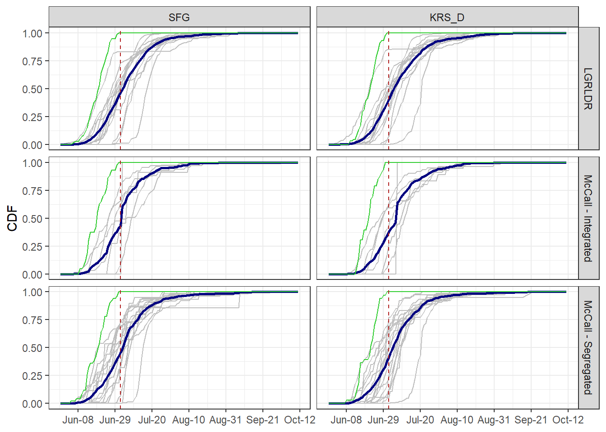
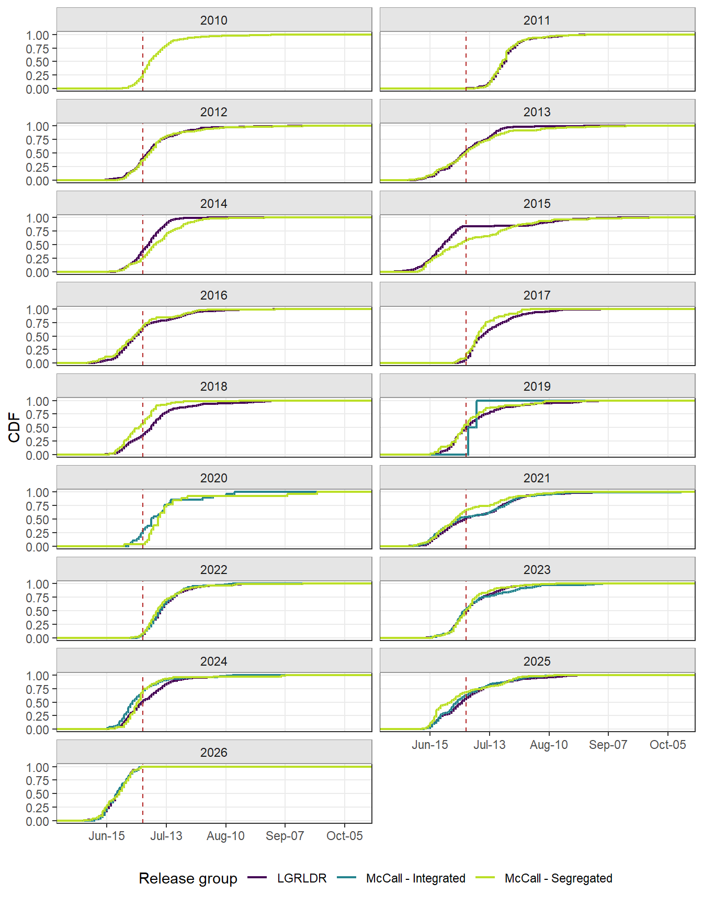
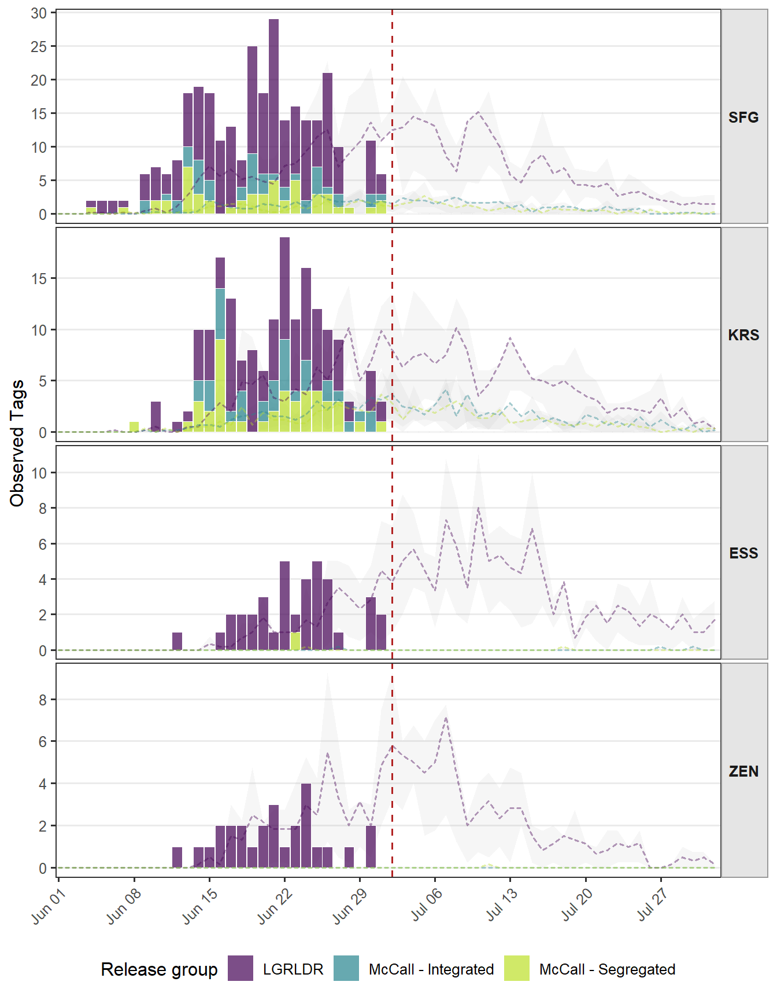
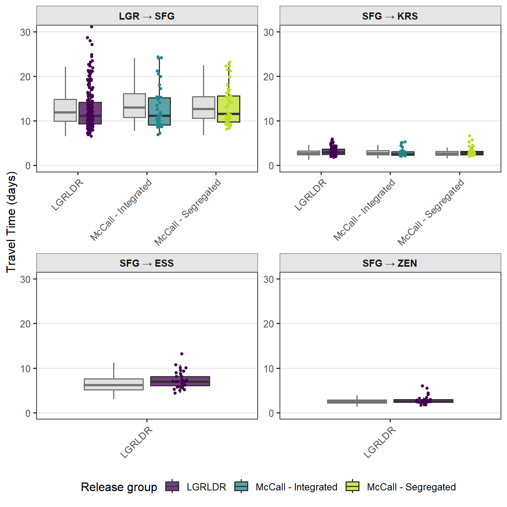

Data Last Retrieved: July 02, 2026 10:13 AM MDT
To estimate the number of adults past each array (Table 1), we summarized expanded counts by release group and age (i.e., adults versus jacks) and further accounted for array detection efficiencies. Array detection efficiencies were estimated as the percent of tags at upstream array(s) that were detected at the given array.
PIT tag observations were queried from DART at the above date and time and summarized by release group, release year, and sort-by-code-designation (i.e., run-at-large [RAL] versus return-to-river [RTR]) to determine the number of tags observed at the South Fork Guard Station (SFS) and Krassel (KRS) arrays on the South Fork Salmon River (Table 3). The number of tags observed were then expanded based on expansion rate, calculated as the inverse of mark rates. For in-season escapement estimates, we focus on natural-origin adults at Lower Granite Dam and juvenile hatchery releases to the South Fork Salmon River. For hatchery releases, expansion rates were derived from the current-year PIT Data tab in 2026 PIT_Tag_Analysis_LowerGranite.xlsx. Natural-origin expansion rates were assumed to be 5.38 based on the set trapping and tagging rate at LGR (18.6%).
| Release Group | Age | Array | Tags Observed | Array Det Eff (%) | Est Tags | Est Adults |
|---|---|---|---|---|---|---|
| LGRLDR | Adults | SFG | 187 | 97 | 193 | 1038 |
| LGRLDR | Adults | KRS_D | 78 | 86 | 91 | 488 |
| LGRLDR | Adults | ESS_D | 16 | 49 | 33 | 178 |
| LGRLDR | Adults | ZEN_D | 25 | 100 | 25 | 134 |
| McCall - Integrated | Adults | SFG | 39 | 97 | 40 | 211 |
| McCall - Integrated | Adults | KRS_D | 30 | 86 | 35 | 176 |
| McCall - Segregated | Adults | SFG | 39 | 97 | 40 | 1420 |
| McCall - Segregated | Adults | KRS_D | 26 | 86 | 30 | 954 |
| McCall - Segregated | Adults | ESS_D | 1 | 49 | 2 | 2 |

Figure 1: Cumulative run timing of hatchery integrated, hatchery segregated, and unclipped returns of LGRLDR-released tags across South Fork Salmon River PIT-tag arrays. Historic returns from 2010 - 2025 (grey) and their average run timing (blue) provide context for the current 2026 return (green). The vertical dashed red line indicates the last data download.

Figure 2: Cumulative run timing of PIT-tagged spring-summer Chinook salmon detected at South Fork Salmon River arrays by spawn year. Curves are shown separately for natural-origin (LGRLDR), hatchery integrated, and hatchery segregated. The vertical dashed red line indicates the last data download.

Figure 3: Daily counts of PIT-tagged adult Chinook salmon first detection at South Fork Salmon River IPTDS sites during the current spawn year. Bars show the number of fish first detected each day, stacked by release group. Dashed lines and shaded ribbons represent the historic mean and interquartile range (25th-75th percentile), respectively, for each release group since 2020. The vertical dashed red line is the current date.
| Segment | Historic | Current | n(Current) |
|---|---|---|---|
| LGR → SFG | 13.6 | 12.8 | 301 |
| SFG → KRS | 3.3 | 3.0 | 176 |
| SFG → ESS | 7.1 | 7.2 | 34 |
| SFG → ZEN | 2.7 | 2.8 | 27 |

Figure 4: Travel times between sequential monitoring sites for PIT-tagged adult Chinook salmon detected at both sites during the current spawning year compared to previous spawning years since 2020. Travel time was calculated as the elapsed time between first detections at each site. Gray boxplots summarize historical travel times, while colored boxplots and points show current-year observations by release group.
| Release Group | Release Year | Sort-By-Code | Array | Ocean Age | Tags Observed | Expansion Rate | Mark Rate Expanded |
|---|---|---|---|---|---|---|---|
| LGRLDR | 2026 | NA | SFG | 1 | 21 | 5.376344 | 113 |
| LGRLDR | 2026 | NA | SFG | 2 | 135 | 5.376344 | 726 |
| LGRLDR | 2026 | NA | SFG | 3 | 52 | 5.376344 | 280 |
| LGRLDR | 2026 | NA | KRS_D | 1 | 11 | 5.376344 | 59 |
| LGRLDR | 2026 | NA | KRS_D | 2 | 49 | 5.376344 | 263 |
| LGRLDR | 2026 | NA | KRS_D | 3 | 29 | 5.376344 | 156 |
| LGRLDR | 2026 | NA | ESS_D | 1 | 4 | 5.376344 | 22 |
| LGRLDR | 2026 | NA | ESS_D | 2 | 12 | 5.376344 | 65 |
| LGRLDR | 2026 | NA | ESS_D | 3 | 4 | 5.376344 | 22 |
| LGRLDR | 2026 | NA | ZEN_D | 1 | 2 | 5.376344 | 11 |
| LGRLDR | 2026 | NA | ZEN_D | 2 | 22 | 5.376344 | 118 |
| LGRLDR | 2026 | NA | ZEN_D | 3 | 3 | 5.376344 | 16 |
| McCall - Integrated | 2023 | RAL | SFG | 3 | 1 | 5.510000 | 6 |
| McCall - Integrated | 2024 | RAL | SFG | 2 | 32 | 6.040000 | 193 |
| McCall - Integrated | 2024 | RTR | SFG | 2 | 6 | 1.000000 | 6 |
| McCall - Integrated | 2025 | RAL | SFG | 1 | 3 | 7.740000 | 23 |
| McCall - Integrated | 2025 | RTR | SFG | 1 | 1 | 1.000000 | 1 |
| McCall - Integrated | 2023 | RAL | KRS_D | 3 | 1 | 5.510000 | 6 |
| McCall - Integrated | 2024 | RAL | KRS_D | 2 | 23 | 6.040000 | 139 |
| McCall - Integrated | 2024 | RTR | KRS_D | 2 | 6 | 1.000000 | 6 |
| McCall - Integrated | 2025 | RAL | KRS_D | 1 | 3 | 7.740000 | 23 |
| McCall - Segregated | 2023 | RAL | SFG | 3 | 3 | 55.900000 | 168 |
| McCall - Segregated | 2024 | RAL | SFG | 2 | 27 | 44.420000 | 1199 |
| McCall - Segregated | 2024 | RTR | SFG | 2 | 9 | 1.000000 | 9 |
| McCall - Segregated | 2025 | RAL | SFG | 1 | 9 | 50.770000 | 457 |
| McCall - Segregated | 2025 | RTR | SFG | 1 | 2 | 1.000000 | 2 |
| McCall - Segregated | 2023 | RAL | KRS_D | 3 | 1 | 55.900000 | 56 |
| McCall - Segregated | 2024 | RAL | KRS_D | 2 | 17 | 44.420000 | 755 |
| McCall - Segregated | 2024 | RTR | KRS_D | 2 | 8 | 1.000000 | 8 |
| McCall - Segregated | 2025 | RAL | KRS_D | 1 | 5 | 50.770000 | 254 |
| McCall - Segregated | 2025 | RTR | KRS_D | 1 | 2 | 1.000000 | 2 |
| McCall - Segregated | 2024 | RTR | ESS_D | 2 | 1 | 1.000000 | 1 |
END DOCUMENT